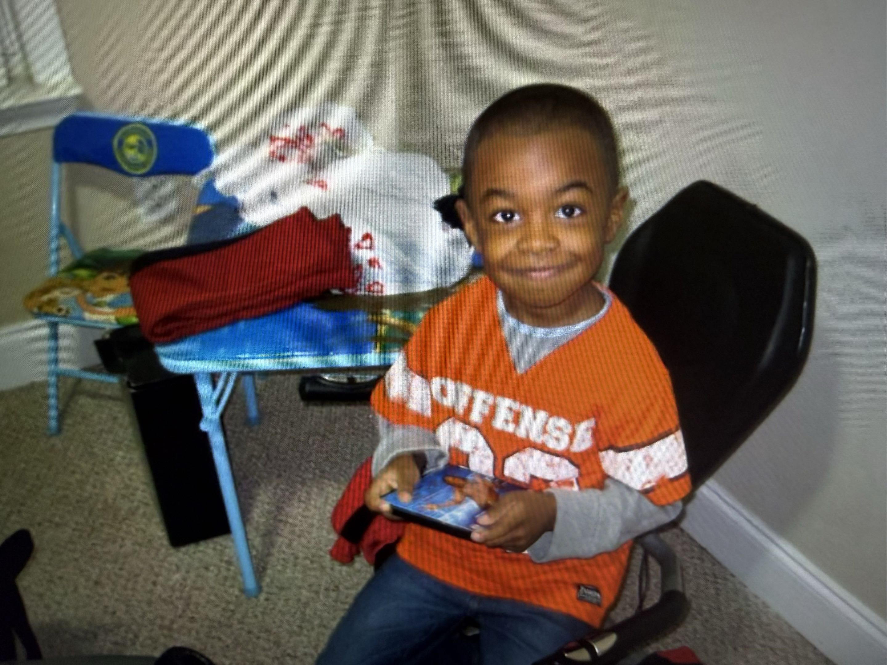

Instagram
InstagramThis website was created by a one-person team. My name is Vince Paul, and I am currently a Computer Science student at Georgia State University. Through the development of this website, I aim to create a solution that meets the needs of hardworking real estate investors by providing reliable tracking, organization, and calculation of important investment metrics. My goal is to simplify the process of managing real estate projects and help investors make informed decisions with confidence.

The goal of this project is to help real estate investors keep track of every property, whether they’re flipping it or holding it long-term. Manage project details, expenses, timelines, and performance all in one place. Stay organized across your entire portfolio without relying on scattered spreadsheets and notes. Make better decisions and keep every investment moving in the right direction.
The reason why I created this website is actually beacuse of my father. Later into my college career, my father began flipping homes. I can't quite remember what project I was working on at the time but because I told my Dad about it, he asked If I could make a tracker for him where he can store and view all the homes he's looking at. Unsure If I could do it or not- I said, "Yes, I probably can". Fast forward 1 year with a better understanding on how to create full-stack applications/webites, it was finally launched.
Instagram